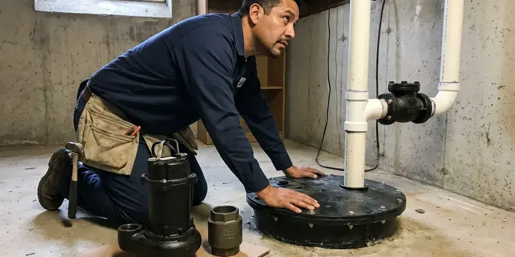

Basement Sump Pump Installation in Newton, MA
Pit, pump, check valve and discharge line. In Newton, MA we install all four on the same trip and test the whole run.
- Water-Tested Before We Leave
- Pits Cut Through the Slab
- Next-Day Pump Swaps
- Local Newton Crews

Beat the Next Heavy Rain in Newton, MA
The liner, pump, check valve and PVC come with us, so most jobs finish in one visit.
Sump Pump Installation for Newton, MA Homes With Lower Levels
BWM Plumbing has installed sump pumps all over Massachusetts, and the weather sets the workload. Water heaters and boilers run long hours through the winter, which shortens their life compared to milder parts of the country. Even a pump that sits dry most of the year has to fire on the first try, so we pick switches and check valves that hold up through long idle stretches. We use cast iron housings, not plastic.
Some of what we do:
- Primary and battery backup pumps sharing one pit
- High-capacity pumps for high water tables
- Pit placement at the true low point of the floor

Additional Plumbing Installation Services in Newton, MA
We install water heaters, pumps, lines, and fixtures across Newton, MA with careful, permitted work that passes inspection the first time.


Customers
Why Choose BWM Plumbing for Basement Sump Pump Installation in Newton, MA?
Code compliance is the floor, not the goal. Each install meets the local plumbing and electrical rules, including a dedicated GFCI-protected receptacle within reach of the pump cord and a discharge that never ties into the sanitary sewer. Inspectors rarely flag our work.
- Drier Air, A dry basement grows less mold and mildew, and the whole house smells better for it.
- Foundation Protection, Pulling groundwater away from the footing takes pressure off the foundation walls.
- Resale Value, Buyers and home inspectors check for a working pump, so a clean install helps at sale time.
Citywide Coverage
Every neighborhood in Newton gets the same install, whether the house is a 1920s cellar or a new build with a walkout. Our trucks carry liners and cast iron pumps, so most jobs finish in one trip. Old cellars can add an hour.
Experienced Team
Each plumber is trained to read a basement before recommending anything. They check where the floor meets the wall and look at the floor drain, then explain whether you need a pump, a drain tile tie-in or just better downspouts in plain terms that make sense at your Newton kitchen table. Nobody pushes extra work.
Safety-First Approach
Sealed lids matter more than most people think. A gasketed, vented lid keeps radon and moisture out, and it stops odors from the pit from drifting into the basement, which is a common complaint with the open pits we find in older homes. Kids and pets stay out too.
Trusted Certified Newton Plumbing Services Professionals
At BWM Plumbing, we take pride in licensed, certified plumbing services throughout Newton, MA. Credentials matter in this trade. Our plumbers hold recognized industry credentials, and they follow strict safety and quality rules on every repair, installation and maintenance call we run.
Call Us Now PHCC Plumbing Contractor Recognition
PHCC Plumbing Contractor Recognition Better Business Bureau (BBB) Accreditation
Better Business Bureau (BBB) Accreditation Angi Certified Pro
Angi Certified Pro ISO 9001 Quality Management Certification
ISO 9001 Quality Management CertificationSump Pits, Pumps and Backups in Newton, MA
Same-Day Sump Pump Installation in Newton
Same-day emergency installs cover pumps that quit in the middle of a storm. We remove standing water from the pit first, then set a new pump on a new check valve, plug it into a tested GFCI outlet and watch it run through several cycles before leaving your Newton basement. Then we talk about a backup.

Battery Backup Sump Pump Systems in Newton
Outages and heavy rain tend to show up together. Without house power, a battery backup keeps a second pump going, and a fully charged 75 amp-hour battery can run a typical backup pump for several hours of on-and-off cycling, longer on a light night. We test it under load.
Sump Pump Alarms and Smart Monitoring in Newton, MA
High water alarms cost little and buy you time. A standalone unit screams when water rises above the pump float, while a Wi-Fi monitor sends a text if the level rises or the power drops, which homeowners who travel tend to like. You hear it go off before we leave.
Residential Basement Sump Pump Installation in Newton
A typical house pit holds an 18 by 22 inch basin with a 1/3 horsepower pump, and that covers most homes. Our plumbers size the unit to the water coming in and the height it has to climb, not to the sale sticker. In Newton, we set the basin at the low corner, bed it in washed gravel and run 1-1/2 inch PVC out through the rim joist. The discharge ends well away from the foundation.
Emergency Sump Pump Installation in Newton, MA
A dead pump with water rising in the pit is a same-day call. We send a plumber with a cast iron pump on the truck, pulls the old unit, checks whether the float or the check valve caused the failure, and gets water moving again in Newton, MA. Bail with a bucket until we arrive.
Discharge Line and Check Valve Installation in Newton
Rigid PVC carries the water from the pump out through the rim joist and at least 10 feet from the house. We add a spring check valve so the water in the pipe cannot fall back, which cuts motor run time and the loud thunk you hear after every cycle. Pipes along exterior walls, in unheated porches and in older homes with little insulation are the first to freeze. We fit a freeze-resistant outlet.
Quiet Submersible Pumps for Finished Basements in Newton
Finished basements call for a quiet pump and a sealed lid. Pairing a submersible with a gasketed cover cuts noise and odor, and we route the discharge behind framing or through a closet so the pipe does not run across a wall you just painted in your Newton home. We patch the slab flush.

Submersible Sump Pump Installation in Newton, MA
Submersible units sit down in the pit, sealed, with the water around them cooling the motor. You hear far less of them than a pedestal, and in Newton, MA we set them on a couple of bricks so the intake stays above the silt that settles on the bottom of every liner. The cord seal matters.
Basement Sump Pump Installation Near Me in Newton, MA
Spotted water on the basement floor and searched for help nearby? Call before the next storm comes through, because a pit that is already full has nowhere to put the next inch of rain, and the water finds the lowest finished room in the house. We keep pumps stocked.
Our trucks cover all of Newton and the nearby suburbs. A pump swap in an existing pit is usually done in a few hours, and new pits that need slab cutting and a concrete patch generally take most of one day from start to cleanup. The concrete chunks leave with us.
BWM Plumbing at a Glance
- Licensed and insured plumbers serving Newton, MA
- Same-day appointments and 24/7 emergency response
- Upfront, flat-rate pricing before work begins
- 4.9-star rated by 434+ Massachusetts customers
Newton Map
Newton Information
- Population
- 88,415
- Area codes
- 617/781/857
- Service area
- Newton and towns within a 40 mile drive
- Nearby
- Brookline, Waltham, Cambridge, Somerville
A basement is the low spot for every gallon the yard cannot hold, and in Newton, MA the sump pit is where that water gets collected and pumped back outside.
Expert Services
Reach out to BWM Plumbing for reliable plumbing work done by licensed pros in Newton, MA.
Our Specialized Plumbing Services in Newton, MA
At BWM Plumbing, you get every kind of plumbing service from one company across Newton, MA. From leak detection to full system installs, our team works fast and charges fair prices on homes and commercial properties alike. Explore our core services below:


How We Install Basement Sump Pumps in Newton, MA
From the first look at your pit to the final test, BWM Plumbing works the same way in Newton, MA.
Request a Quote
Call (857) 335-4894 to book a visit with BWM Plumbing. You get a written, itemized quote before any work starts.
Site Assessment
We look at the layout of your Newton basement, the floor drain and any drain tile already in place, then pick the pump and pit size that fit.
Professional Installation
We do the whole job, from excavating the pit to setting the pump and connecting the discharge, all to local Massachusetts code.
Frequently Asked Questions About Basement Sump Pump Installation in Newton
Figure on roughly $800 to $2,000 for most basement sump pump installs in Newton. At the low end you get a pump swap in a pit that is already there, while a new pit cut through the slab, a long discharge run, or a battery backup pushes the total toward the top of that range. You get a written price after we look.
Local plumbing inspectors apply the state code consistently, so permitted work is expected to be done to the letter. New pits, new circuits and new discharge routes are the parts most likely to need a plumbing permit. We check the local rules before the job starts, and when a permit applies we pull it and schedule the inspection ourselves. No trips to the permit office.
Liberty Pumps, Zoeller and Wayne are our regulars. Each offers cast iron housings and dependable switches, and all three have solid parts support through local supply houses, which matters more than a fancy feature list when something breaks. The pit size picks the model.
Zoeller, Wayne, Little Giant and Liberty Pumps cover most of our installs. Horsepower and lift decide which model goes in, then by features like a vertical float or a built-in alarm, so the pump fits your pit, your budget and the amount of water your Newton basement actually takes on. Cast iron is our default.
Changing out a pump in an existing pit takes about two to three hours. Plan on most of a day for a new pit with a slab cut and patch, since the concrete needs a little time to firm up before the pump goes into service.
Plan on 4 to 8 hours for a standard install. A new pit with slab cutting can stretch it to a full day, and tricky electrical access or a long discharge run through a finished wall adds time on top of that. You get a time estimate first.
Look for a pump that runs nonstop, short cycles, or does not start when the pit fills. Visible rust and a stuck float are other red flags, and if your basement flooded even though you have a pump, the pump or its switch was not up to the job. Age matters too.
Usually not. Standard policies tend to skip pump installs and wear-and-tear repairs, and many also exclude flooding from groundwater unless you bought a water backup or sump failure endorsement for an extra premium. Your agent can tell you what is covered.
Hear From Customers Who Hired Our Plumbing Experts

Monica A.
Our water bill nearly doubled in one month with no change in how we used water. The tech checked the meter, heard the leak under the hallway with his equipment, and opened a hole about a foot square. Fixed the same day.
Slab Leak Repair · Waltham, MA
Marcus H.
Grease from the fryer line kept clogging the kitchen drain at my diner. BWM Plumbing hydro jetted the line after closing, showed me the buildup on camera, and set us up on a quarterly cleaning so it does not catch us on a Friday again.
Drain Cleaning · Cambridge, MA
Carlos V.
Our house still had galvanized pipe, and upstairs the shower was a trickle. The crew repiped everything in PEX over three days and patched every drywall hole before they left. The pressure difference is night and day.
Repiping · Waltham, MA
Megan L.
Our upstairs tub drained so slowly that every shower turned into a bath. BWM Plumbing pulled a wad of hair out of the stopper and then snaked the line past the trap. Three months later it still drains fast.
Drain Cleaning · Newton, MA
Angela D.
Our sump pump quit during a storm and the water was an inch from the basement carpet. BWM Plumbing put in a new pump with a battery backup that same evening. We have had two heavy rains since. It kicked on both times.
Sump Pump · Brookline, MATyler J.
We bought a taller comfort height toilet for my dad, who just had knee surgery. The plumber pulled the old one, found the flange was cracked, and replaced it before setting the new bowl. Took about two hours.
Toilet Installation · Waltham, MA